Rocka Rolla
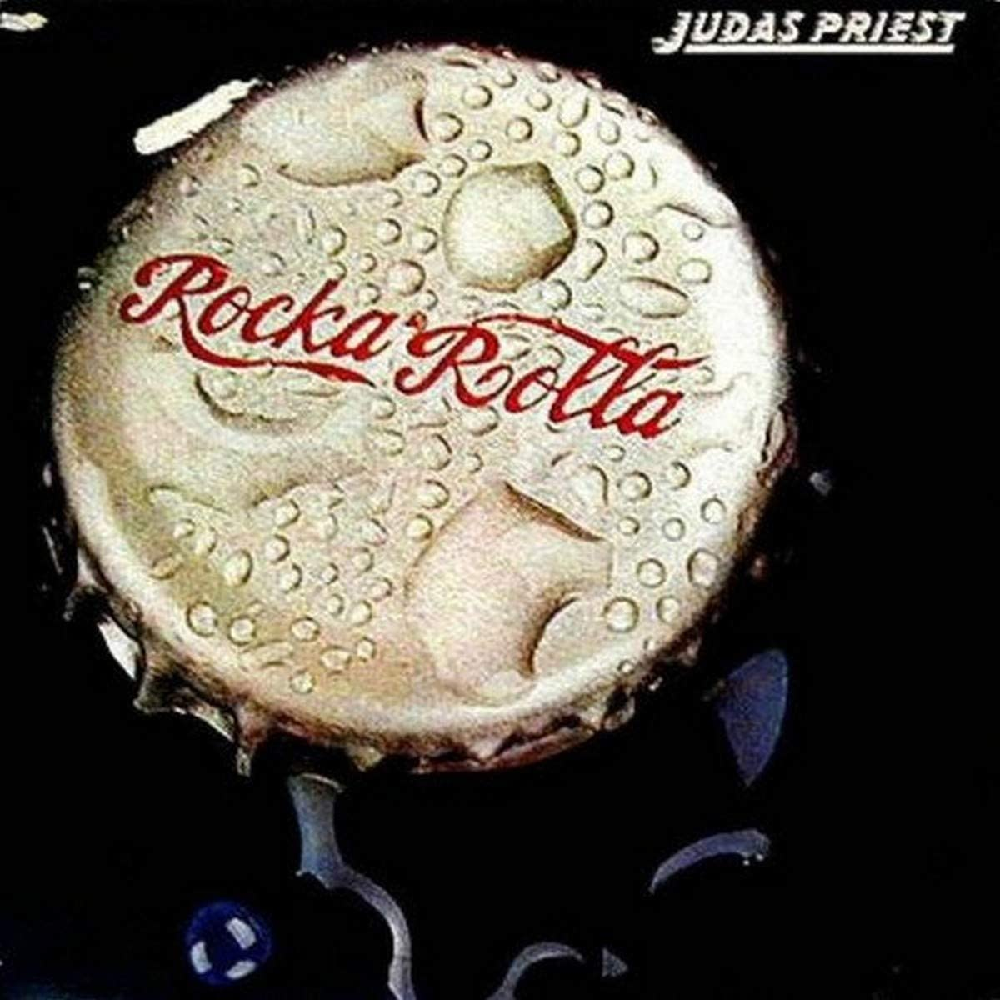
Faixas
- One For The Road
- Rocka Rolla
- Winter
- Deep Freeze
- Winter Retreat
- Cheater
- Never Satisfied
- Run Of The Mill
- Dying to Meet You/Hero, Hero
- Caviar And Meths
| Formação | ||||
|---|---|---|---|---|
| Vocal | Guitarra 1 | Guitarra 2 | Baixo | Bateria |
| Rob Halford | Glenn Tipton | K.K. Downing | Ian Hill | John Hinch |
Data de Lançamento: 06/09/1974
Sad Wings of Destiny
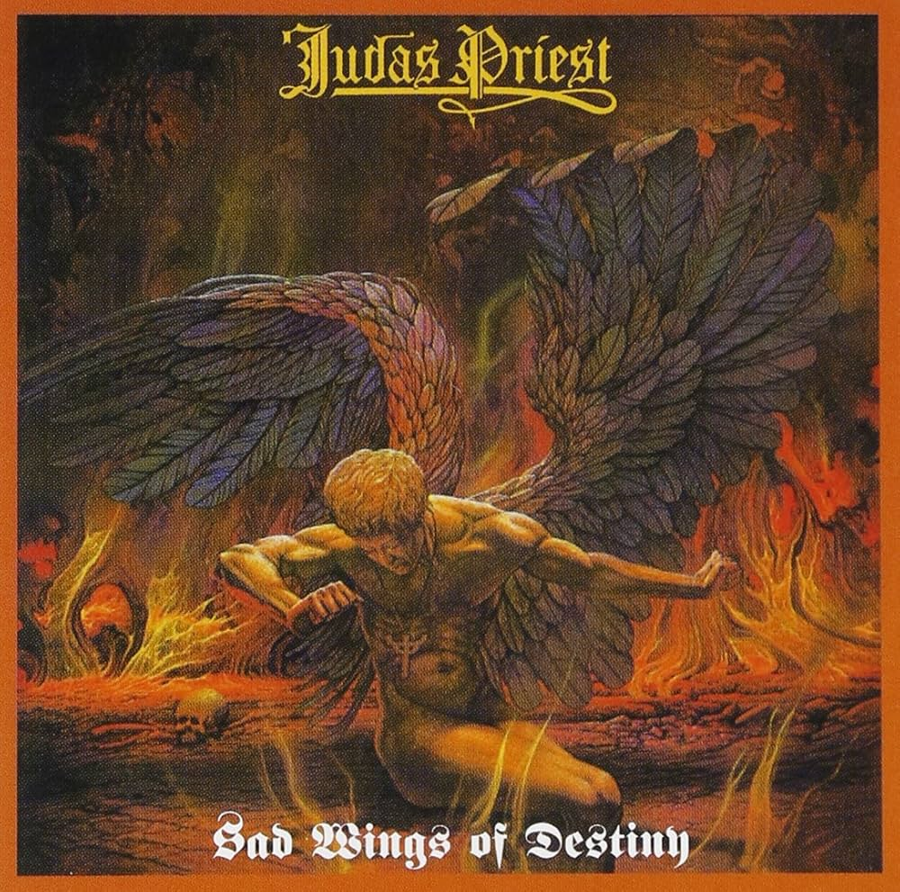
Faixas
- Victim of Changes
- The Ripper
- Dreamer Deceiver
- Deceiver
- Prelude
- Tyrant
- Genocide
- Epitaph
- Island of Domination
| Formação | ||||
|---|---|---|---|---|
| Vocal | Guitarra 1 | Guitarra 2 | Baixo | Bateria |
| Rob Halford | Glenn Tipton | K.K. Downing | Ian Hill | Alan Moore |
Data de Lançamento: 23/03/1976
Sin After Sin
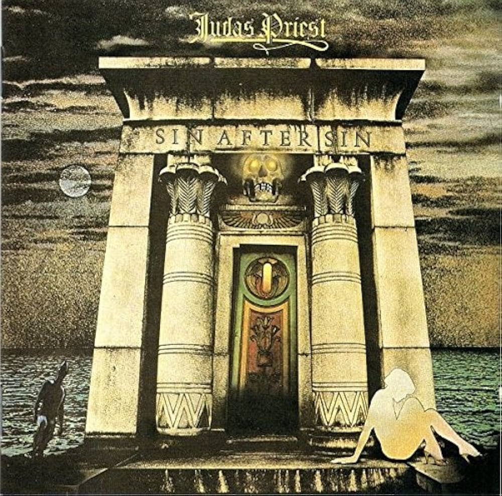
Faixas
- Sinner
- Diamonds and Rust (Joan Baez cover)
- Starbreaker
- Last Rose of Summer
- Let Us Prey/Call For The Priest
- Raw Deal
- Here Come The Tears
- Dissident Agressor
| Formação | ||||
|---|---|---|---|---|
| Vocal | Guitarra 1 | Guitarra 2 | Baixo | Bateria |
| Rob Halford | Glenn Tipton | K.K. Downing | Ian Hill | Simon Phillips |
Data de Lançamento: 23/04/1977
Stained Class
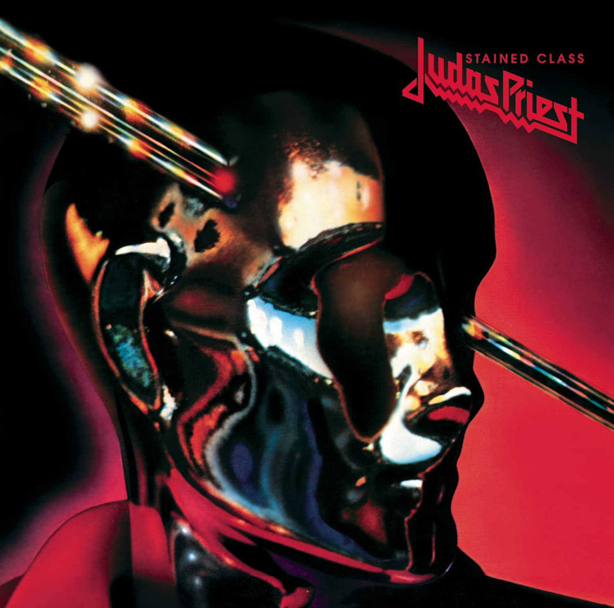
Faixas
- Exciter
- White Heat Red Hot
- Better By You, Better Than Me (Spooky Tooth cover)
- Stained Class
- Invader
- Saints in Hell
- Savage
- Beyond the Realms of Death
- Heroes End
| Formação | ||||
|---|---|---|---|---|
| Vocal | Guitarra 1 | Guitarra 2 | Baixo | Bateria |
| Rob Halford | Glenn Tipton | K.K. Downing | Ian Hill | Les Binks |
Data de Lançamento: 10/02/1978
Killing Machine
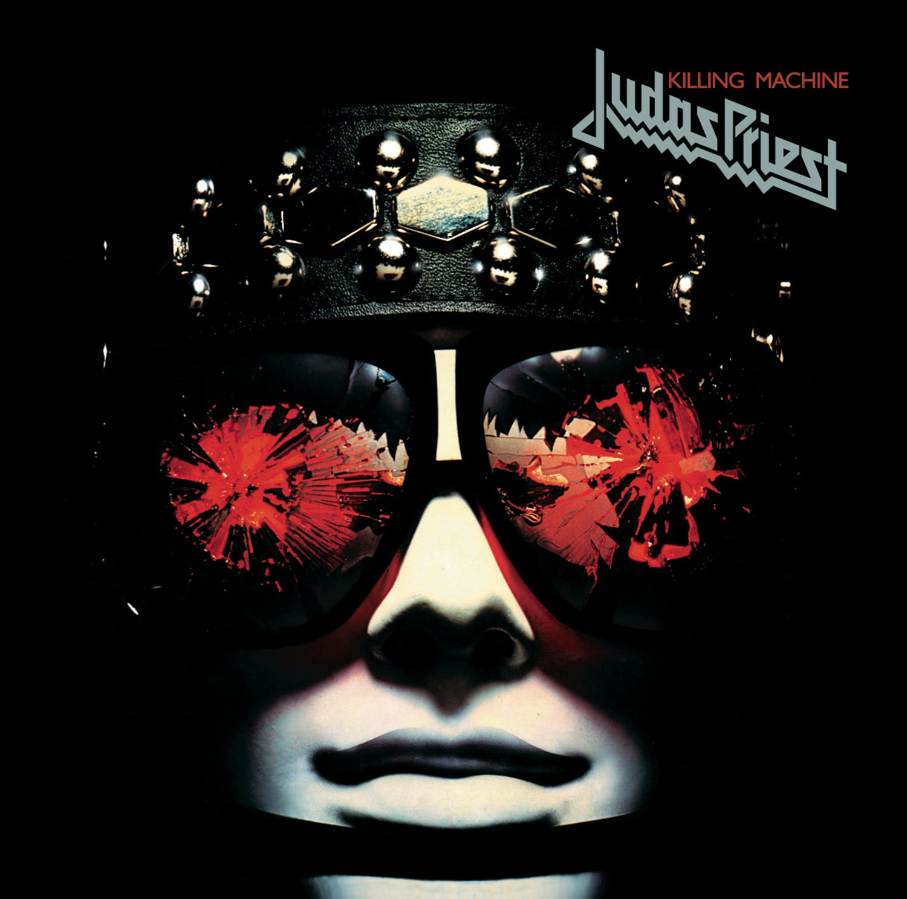
Faixas
- Delivering The Goods
- Rock Forever
- Evening Star
- Hell Bent For Leather
- Take On The World
- Burnin' Up
- The Green Manalishi (With The Two Pronged Crown) (Fleetwood Mac cover)
- Killing Machine
- Running Wild
- Before The Dawn
- Evil Fantasies
| Formação | ||||
|---|---|---|---|---|
| Vocal | Guitarra 1 | Guitarra 2 | Baixo | Bateria |
| Rob Halford | Glenn Tipton | K.K. Downing | Ian Hill | Les Binks |
Data de Lançamento: 09/10/1978
British Steel
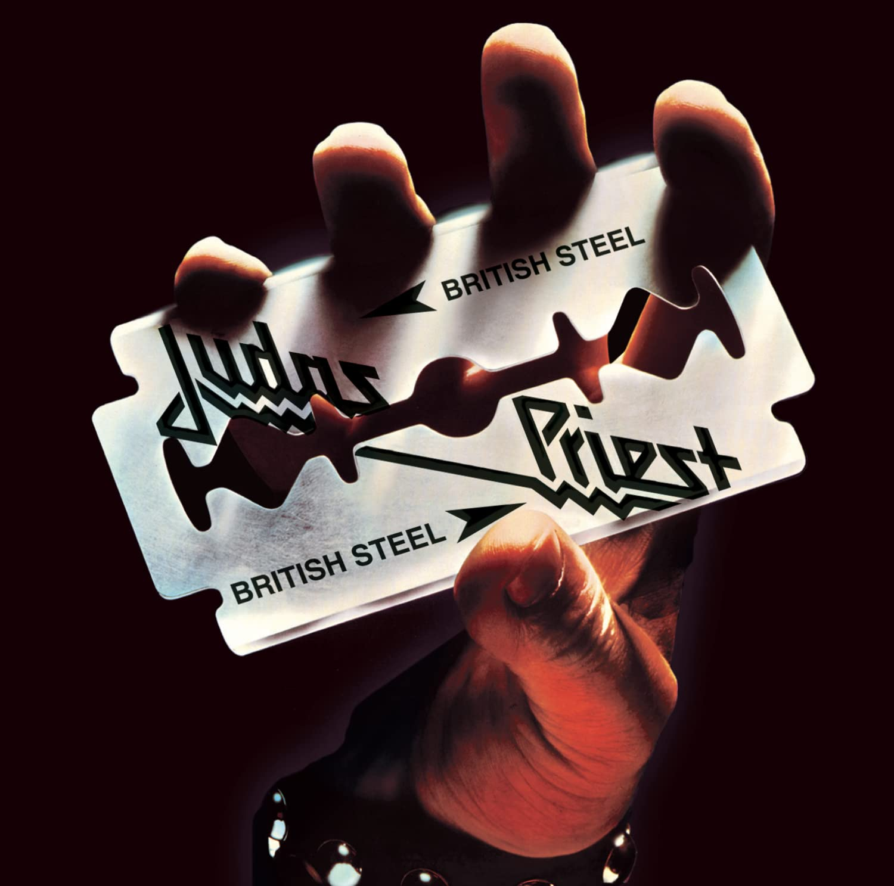
Faixas
- Rapid Fire
- Metal Gods
- Breaking The Law
- Grinder
- United
- You Don't Have To Be Old To Be Wise
- Living After Midnight
- The Rage
- Steeler
| Formação | ||||
|---|---|---|---|---|
| Vocal | Guitarra 1 | Guitarra 2 | Baixo | Bateria |
| Rob Halford | Glenn Tipton | K.K. Downing | Ian Hill | Dave Holland |
Data de Lançamento: 14/04/1980
Point of Entry
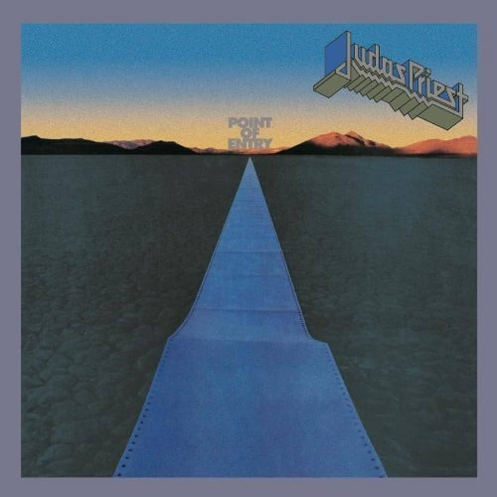
Faixas
- Heading Out To The Highway
- Don't Go
- Hot Rockin'
- Turning Circles
- Desert Plains
- Solar Angels
- You Say Yes
- All The Way
- Troubleshooter
- On The Run
| Formação | ||||
|---|---|---|---|---|
| Vocal | Guitarra 1 | Guitarra 2 | Baixo | Bateria |
| Rob Halford | Glenn Tipton | K.K. Downing | Ian Hill | Dave Holland |
Data de Lançamento: 26/02/1981
Screaming For Vengeance
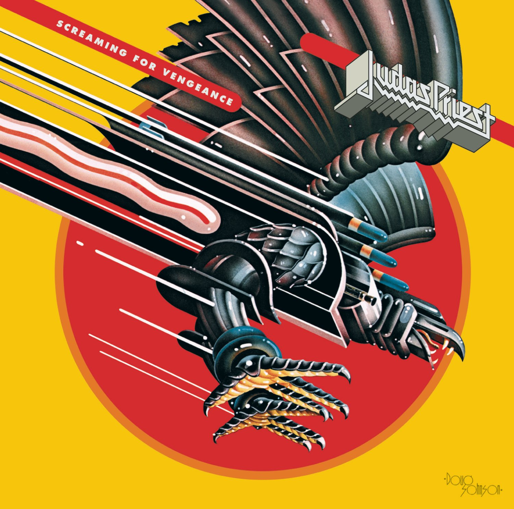
Faixas
- The Hellion
- Electric Eye
- Riding On The Wind
- Bloodstone
- (Take These) Chains
- Pain And Pleasure
- Screaming For Vengeance
- You've Got Another Thing Comin'
- Fever
- Devil's Child
| Formação | ||||
|---|---|---|---|---|
| Vocal | Guitarra 1 | Guitarra 2 | Baixo | Bateria |
| Rob Halford | Glenn Tipton | K.K. Downing | Ian Hill | Dave Holland |
Data de Lançamento: 17/07/1982
Defenders Of The Faith
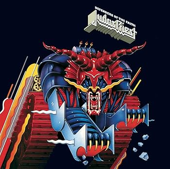
Faixas
- Freewheel Burning
- Jawbreaker
- Rock Hard Ride Free
- The Sentinel
- Love Bites
- Eat Me Alive
- Some Heads Are Gonna Roll
- Night Comes Down
- Heavy Duty
- Defenders Of The Faith
| Formação | ||||
|---|---|---|---|---|
| Vocal | Guitarra 1 | Guitarra 2 | Baixo | Bateria |
| Rob Halford | Glenn Tipton | K.K. Downing | Ian Hill | Dave Holland |
Data de Lançamento: 04/01/1984
Turbo
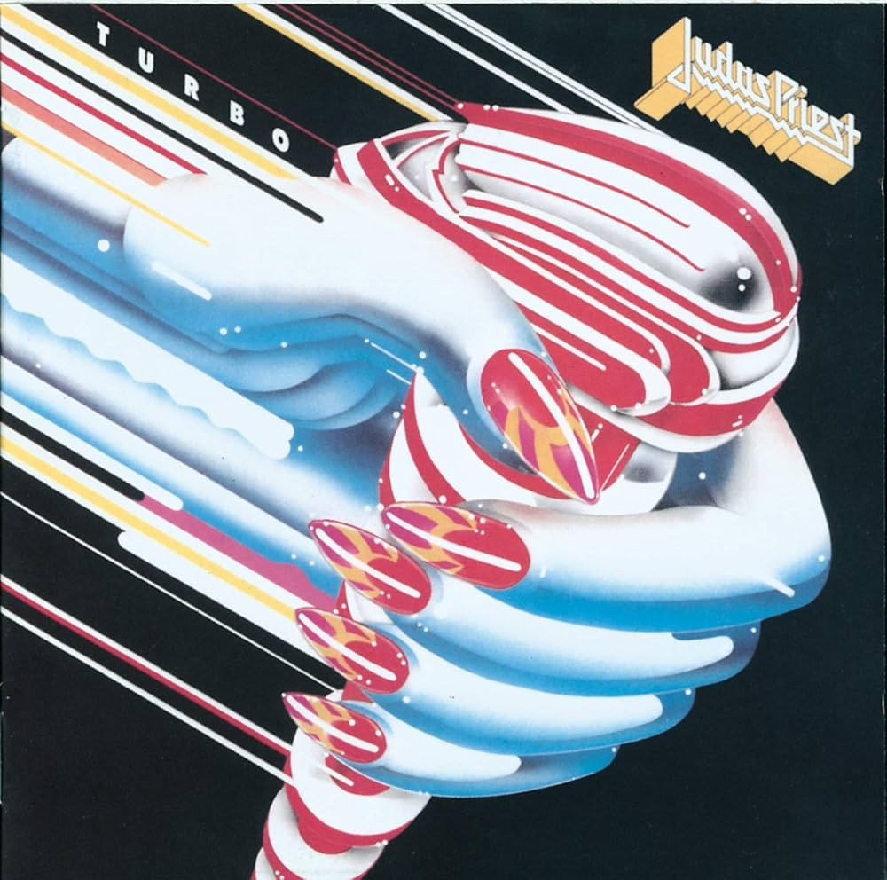
Faixas
- Turbo Lover
- Locked In
- Private Property
- Parental Guidance
- Rock You All Around The World
- Out In The Cold
- Wild Nights, Hot And Crazy Days
- Hot For Love
- Reckless
| Formação | ||||
|---|---|---|---|---|
| Vocal | Guitarra 1 | Guitarra 2 | Baixo | Bateria |
| Rob Halford | Glenn Tipton | K.K. Downing | Ian Hill | Dave Holland |
Data de Lançamento: 15/04/1986
Ram It Down
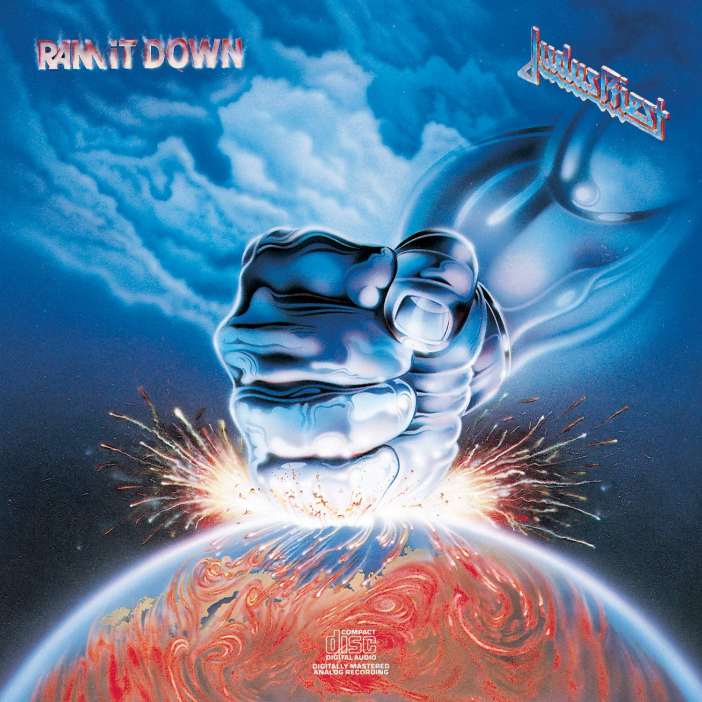
Faixas
- Ram It Down
- Heavy Metal
- Love Zone
- Come And Get It
- Hard As Iron
- Blood Red Skies
- I'm A Rocker
- Johnny B. Goode (Chuck Berry cover)
- Love You To Death
- Monsters Of Rock
| Formação | ||||
|---|---|---|---|---|
| Vocal | Guitarra 1 | Guitarra 2 | Baixo | Bateria |
| Rob Halford | Glenn Tipton | K.K. Downing | Ian Hill | Dave Holland |
Data de Lançamento: 17/05/1988
Painkiller
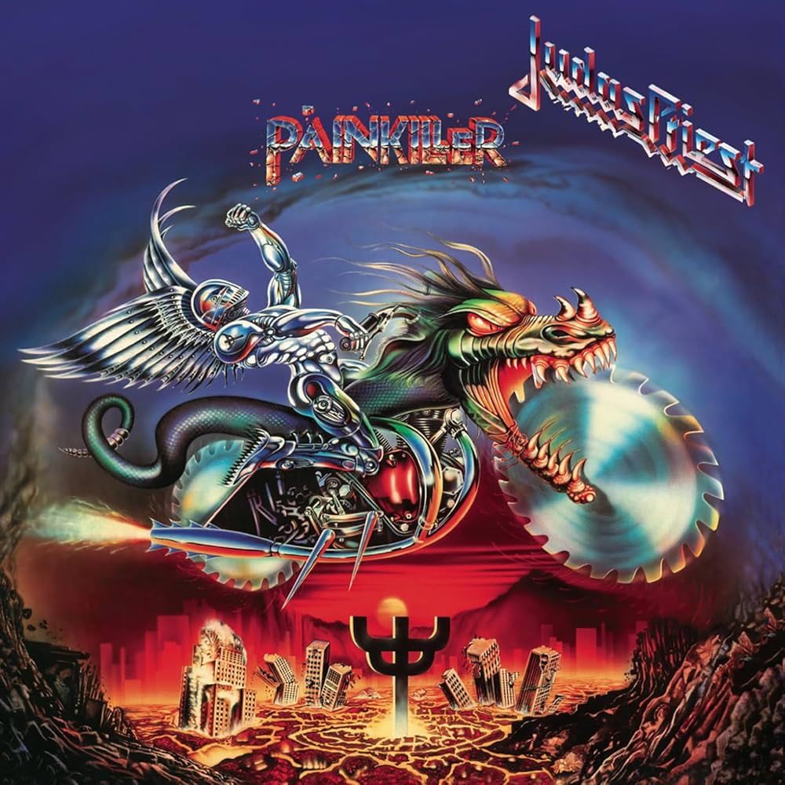
Faixas
- Painkiller
- Hell Patrol
- All Guns Blazing
- Leather Rebel
- Metal Meltdown
- Night Crawler
- Between The Hammer And The Anvil
- A Touch Of Evil
- Battle Hymn
- One Shot At Glory
| Formação | ||||
|---|---|---|---|---|
| Vocal | Guitarra 1 | Guitarra 2 | Baixo | Bateria |
| Rob Halford | Glenn Tipton | K.K. Downing | Ian Hill | Scott Travis |
Data de Lançamento: 03/09/1990
Jugulator
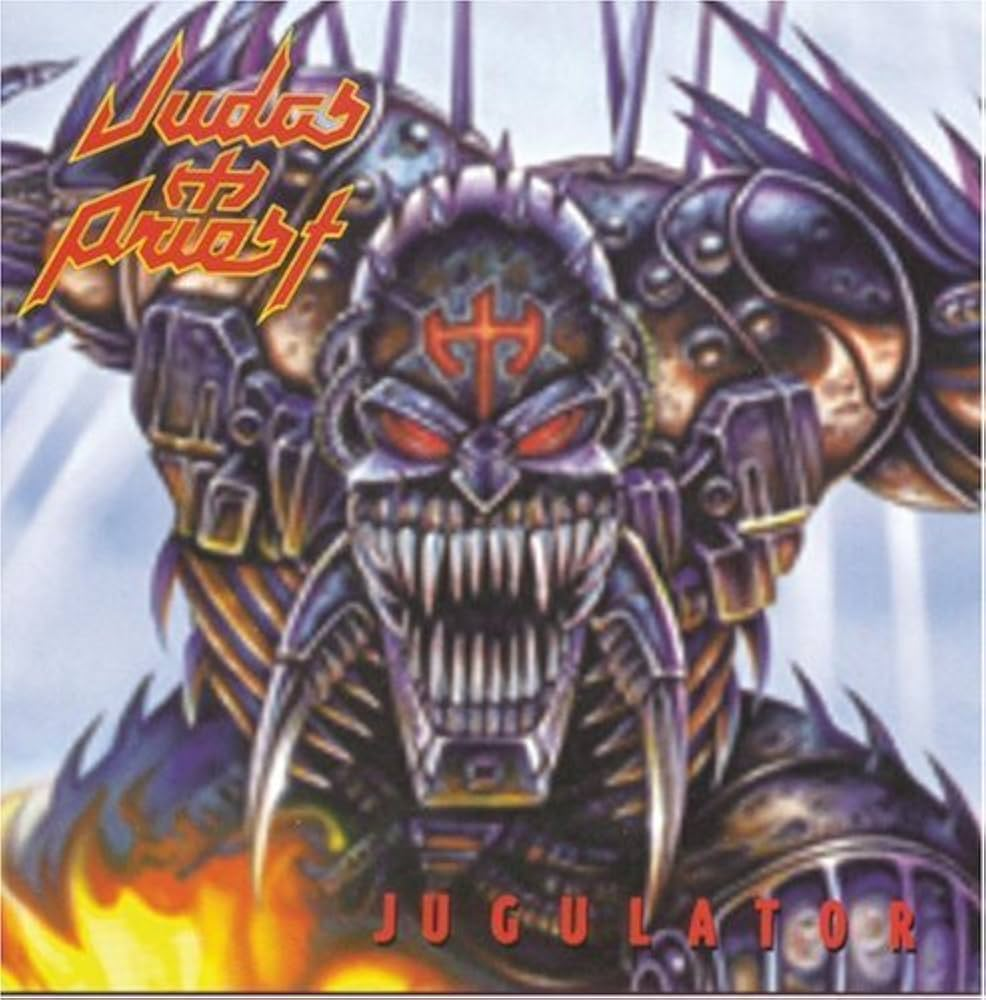
Faixas
- Jugulator
- Blood Stained
- Dead Meat
- Death Row
- Decapitate
- Burn In Hell
- Brain Dead
- Abductors
- Bullet Train
- Cathedral Spires
| Formação | ||||
|---|---|---|---|---|
| Vocal | Guitarra 1 | Guitarra 2 | Baixo | Bateria |
| Tim 'Ripper' Owens | Glenn Tipton | K.K. Downing | Ian Hill | Scott Travis |
Data de Lançamento: 28/10/1997
Demolition
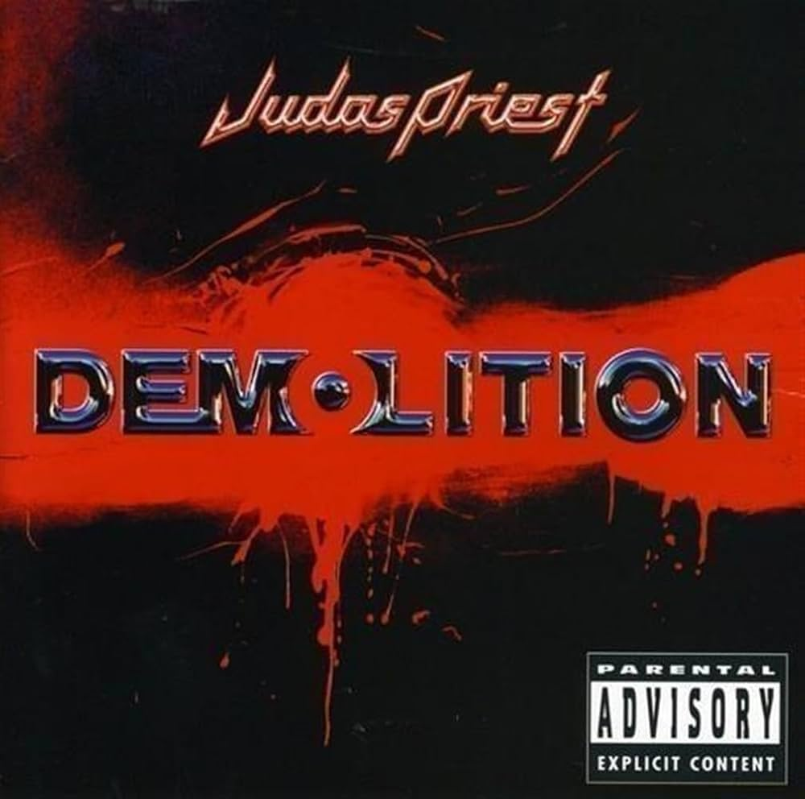
Faixas
- Machine Man
- One On One
- Hell Is Home
- Jekyll And Hyde
- Close To You
- Devil Digger
- Bloodsuckers
- In Between
- Feed On Me
- Subterfuge
- Lost And Found
- Cyberface
- Metal Messiah
| Formação | ||||
|---|---|---|---|---|
| Vocal | Guitarra 1 | Guitarra 2 | Baixo | Bateria |
| Tim 'Ripper' Owens | Glenn Tipton | K.K. Downing | Ian Hill | Scott Travis |
Data de Lançamento: 31/07/2001
Angel Of Retribution
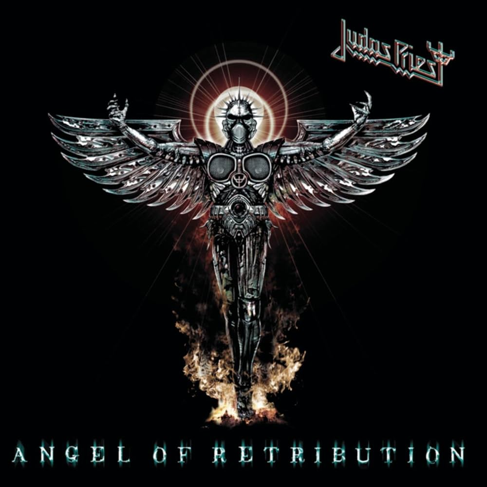
Faixas
- Judas Rising
- Deal With The Devil
- Revolution
- Worth Fighting For
- Demonizer
- Wheels Of Fire
- Angel
- Hellrider
- Eulogy
- Lochness
| Formação | ||||
|---|---|---|---|---|
| Vocal | Guitarra 1 | Guitarra 2 | Baixo | Bateria |
| Rob Halford | Glenn Tipton | K.K. Downing | Ian Hill | Scott Travis |
Data de Lançamento: 28/02/2005
Nostradamus
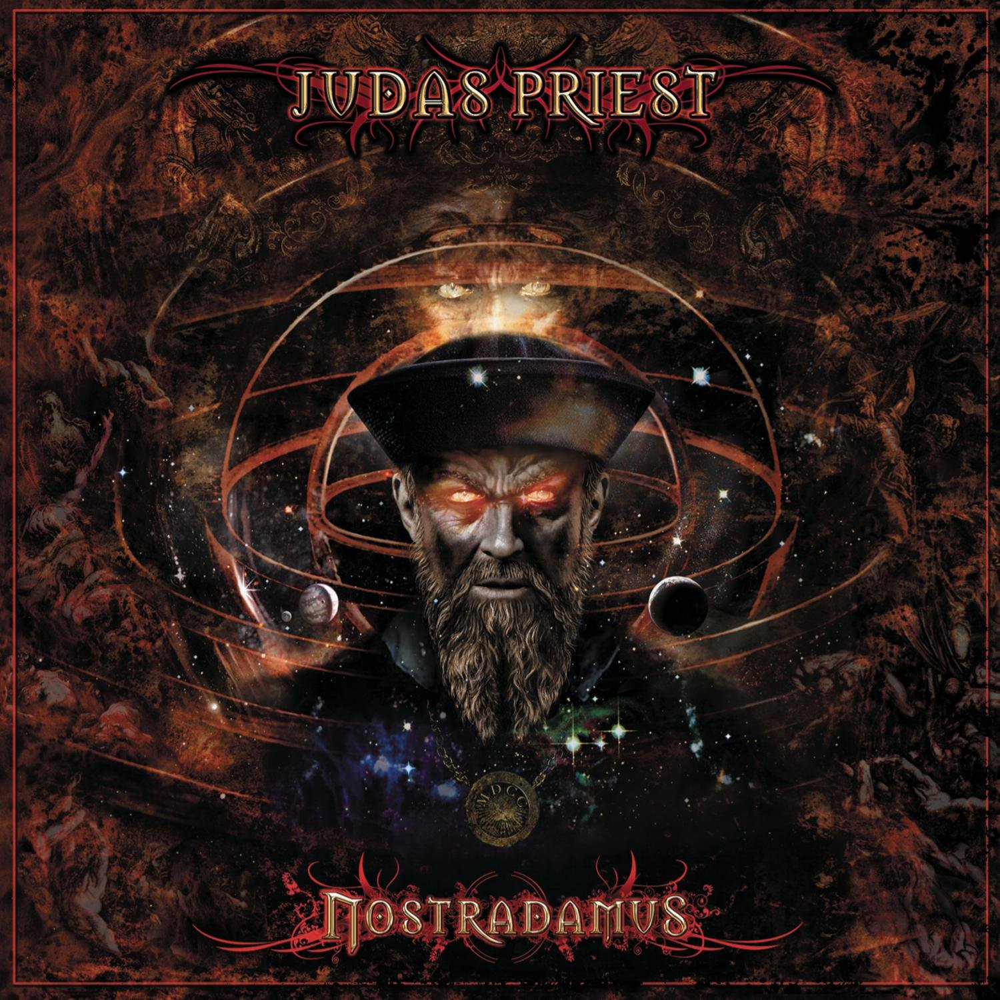
Faixas
Disco 1
- Dawn Of Creation
- Prophecy
- Awakening
- Revelations
- The Four Horsemen
- War
- Sands Of Time
- Pestilence and Plague
- Death
- Peace
- Conquest
- Lost Love
- Persecution
- Solitude
- Exiled
- Alone
- Shadows In The Flame
- Visions
- Hope
- New Beginnings
- Calm Before The Storm
- Nostradamus
- Future Of Mankind
| Formação | ||||
|---|---|---|---|---|
| Vocal | Guitarra 1 | Guitarra 2 | Baixo | Bateria |
| Rob Halford | Glenn Tipton | K.K. Downing | Ian Hill | Scott Travis |
Data de Lançamento: 17/06/2008
Redeemer Of Souls
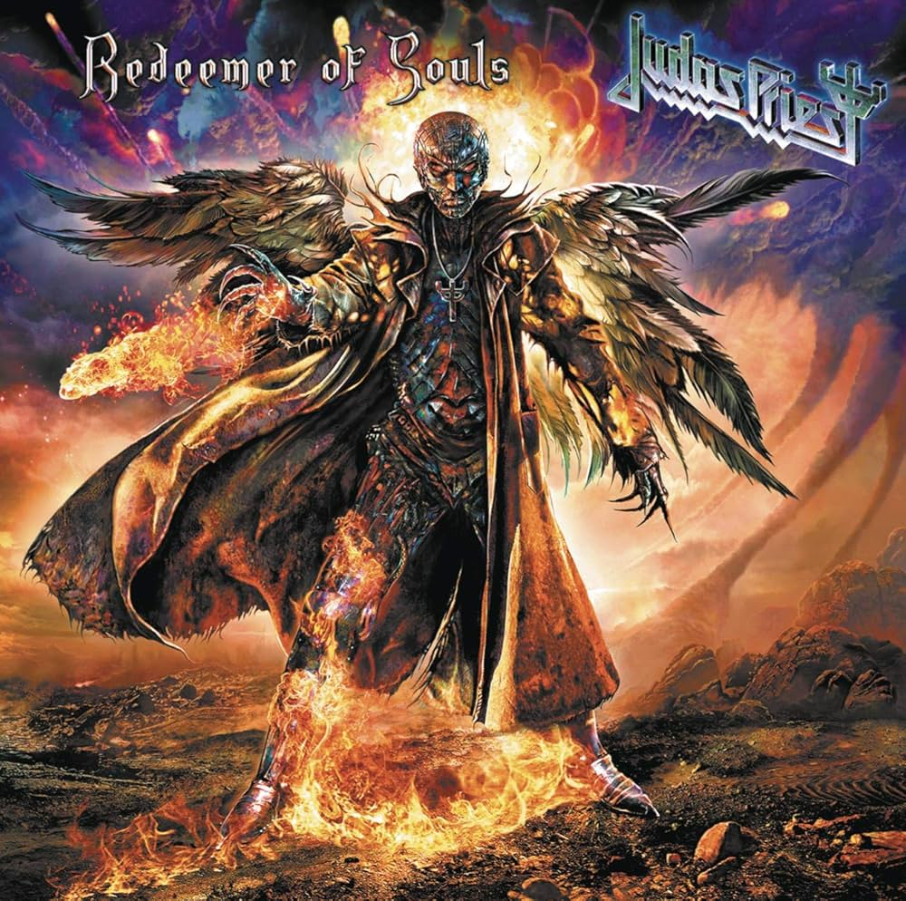
Faixas
- Dragonaut
- Redeemer Of Souls
- Halls Of Valhalla
- Sword Of Damocles
- March Of The Damned
- Down In Flames
- Hell & Back
- Cold Blooded
- Metalizer
- Crossfire
- Secrets Of The Dead
- Battle Cry
- Beginning Of The End
| Formação | ||||
|---|---|---|---|---|
| Vocal | Guitarra 1 | Guitarra 2 | Baixo | Bateria |
| Rob Halford | Glenn Tipton | Richie Faulkner | Ian Hill | Scott Travis |
Data de Lançamento: 11/07/2014
Firepower
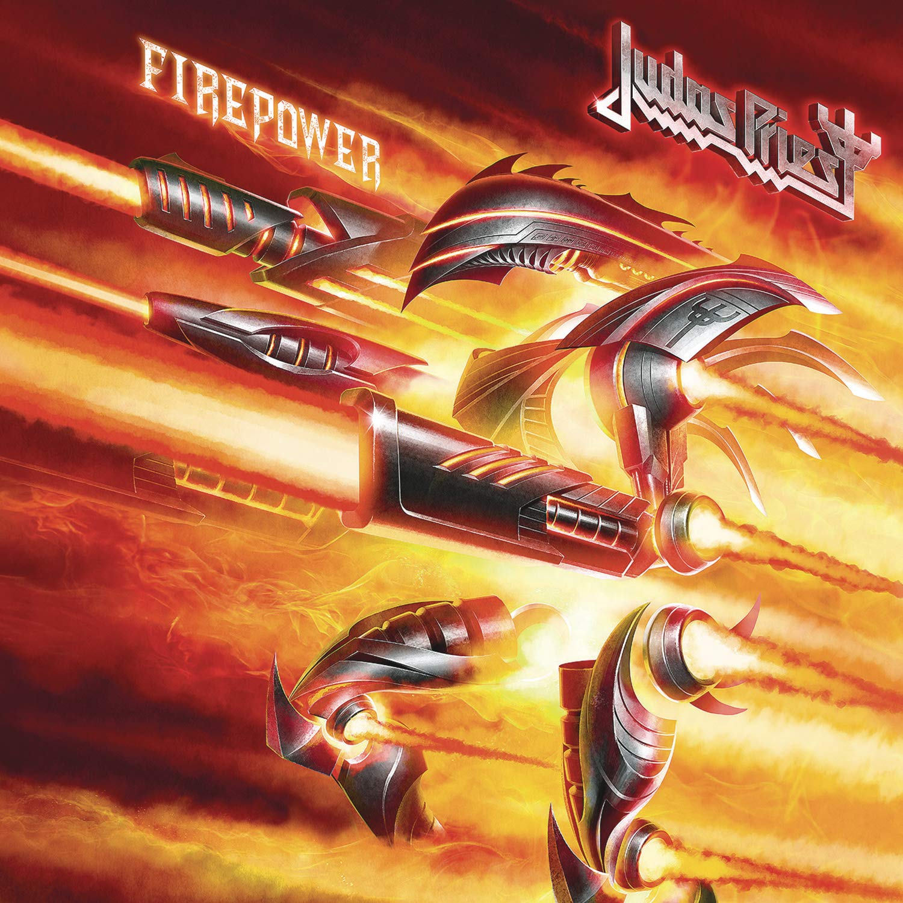
Faixas
- Firepower
- Lightning Strike
- Evil Never Dies
- Never The Heroes
- Necromancer
- Children Of The Sun
- Guardians
- Rising From Ruins
- Flame Thrower
- Spectre
- Traitors Gate
- No Surrender
- Lone Wolf
- Sea Of Red
| Formação | ||||
|---|---|---|---|---|
| Vocal | Guitarra 1 | Guitarra 2 | Baixo | Bateria |
| Rob Halford | Glenn Tipton | Richie Faulkner | Ian Hill | Scott Travis |
Data de Lançamento: 09/03/2018
Invincible Shield
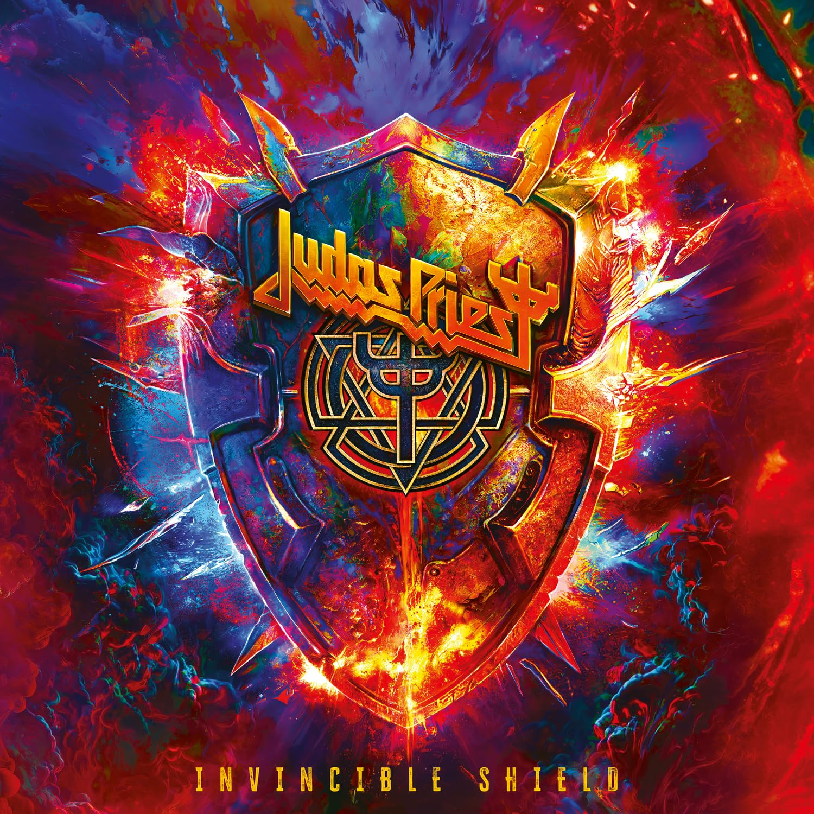
Faixas
- Panic Attack
- The Serpent And The King
- Invincible Shield
- Devil In Disguise
- Gates Of Hell
- Crown Of Horns
- As God Is My Witness
- Trial By Fire
- Escape From Reality
- Sons Of Thunder
- Giants In The Sky
| Formação | ||||
|---|---|---|---|---|
| Vocal | Guitarra 1 | Guitarra 2 | Baixo | Bateria |
| Rob Halford | Glenn Tipton | Richie Faulkner | Ian Hill | Scott Travis |
Data de Lançamento: 06/03/2024